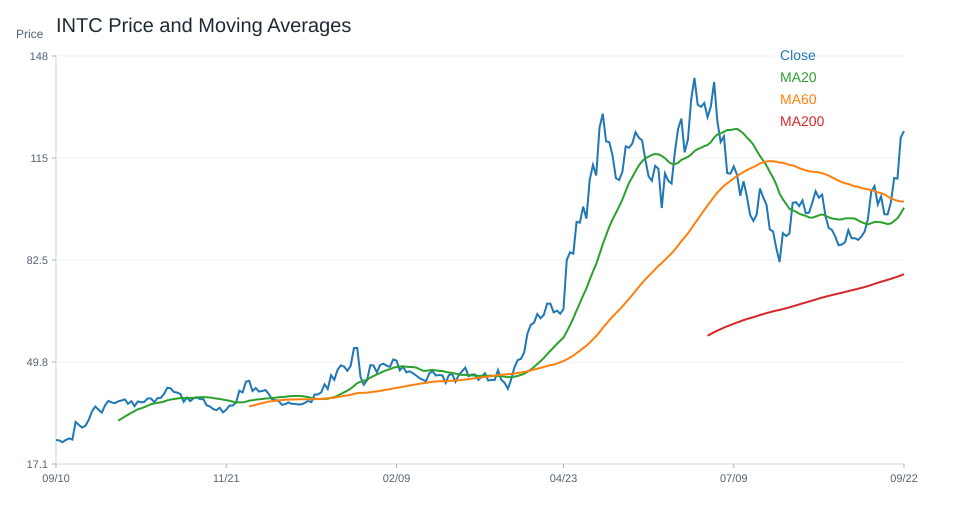
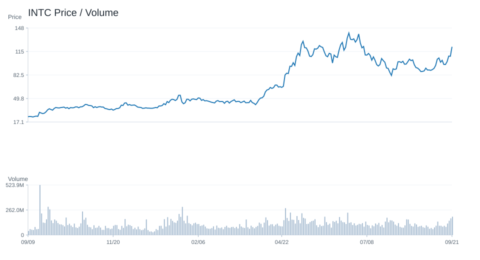
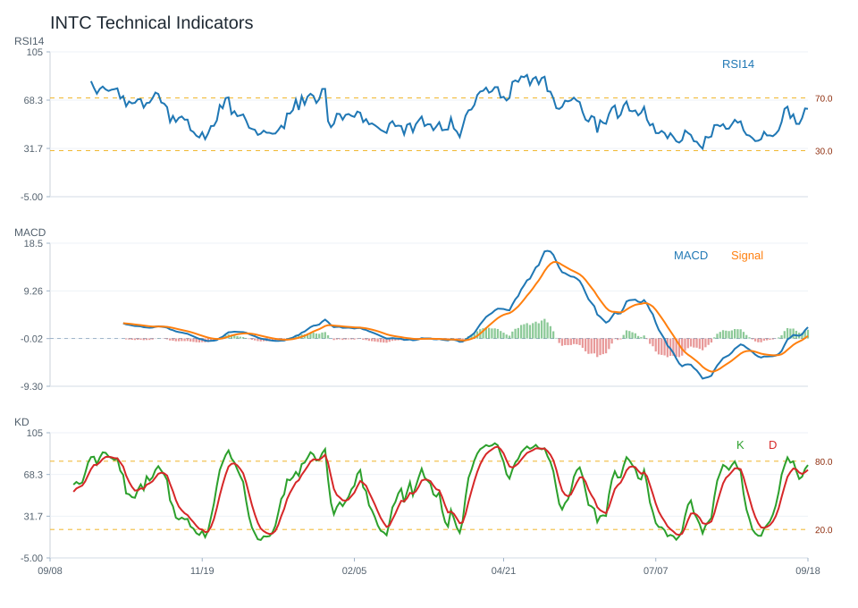
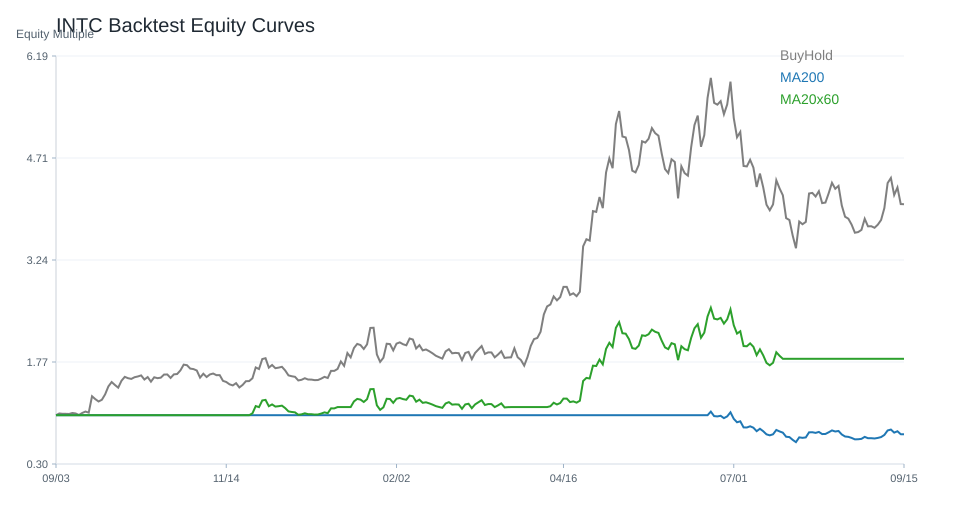

20 日
7.82%60 日
-3.34%觀察等級
積極觀察市場資料
2026-08-13- 成交量111,979,671.00
- 20 日均線96.45
- 60 日均線110.78
- 200 日均線69.83
- 距 52 週高點-25.81%
- 距 52 週低點370.57%
技術指標
Python 計算- RSI1453.41
- MACD hist1.84
- KD K/D79.84 / 73.75
- ADX16.24
- 布林上緣108.75
- 布林下緣84.16
量價與事件
規則式分析- 量價型態量能中性
- 量價分數0
- 20 日量比0.93
- OBV 20 日變化-4.07%
- 事件偏向事件中性
- 事件分數0
研究訊號與觀察等級
不是買賣建議積極觀察；研究訊號 強烈偏多，分數 6。
多項量化與事件條件同時偏正向，適合列為優先研究名單。
- 20 日漲幅偏強
- 站上 20 日均線
- 站上 200 日均線
- RSI 位於中性偏強區
- MACD histogram 為正
- KD 偏多但未過熱
- 量價型態：量能中性
- 量價未出現明確偏多或偏空結構
回測摘要
歷史資料研究| 策略 | CAGR | Sharpe | 最大回撤 | 勝率 | 交易次數 |
|---|---|---|---|---|---|
| 價格高於 200 日均線 | 45.81% | 1.06 | -45.55% | 52.68% | 7 |
| 20/60 日均線交叉 | -5.52% | 0.12 | -71.76% | 47.85% | 11 |
| 買進持有 | 32.33% | 0.77 | -63.80% | 50.05% | 1 |
圖表
價格 / 量價 / 技術 / 回測INTC 價格均線

INTC 量價關係

INTC 技術指標

INTC 回測
